Top Masteries
 By
MrOwnership
By
MrOwnership
Contents
Intro
We are going to take a look at another metric for greatness, Mastery Awards. Mastery awards are given to users when they complete every achievement for a given set in hardcore mode. Users wear mastery awards as a badge of honor on their profile page representing all the hard work they put into truly becoming a master of the game.
Below we will take a look at which users rank among the best with the most mastery awards in several categories well as notable updates from the previous month to each individual category. Check to see how you rank among the rest of the community members.
Special thanks to  Nydaxn for creating the ranking images.
Nydaxn for creating the ranking images.
Current Champions
|
|
|
Mastery Awards |
|---|---|---|
| Total Awards |  MaxMilyin MaxMilyin |
573 |
| Arcade |  DUT DUT |
47 |
| Atari 2600 |  RetroChris81 RetroChris81 |
77 |
| Game Boy |  Shootzy Shootzy |
104 |
| Game Boy Advance |  bonecrusher1022 bonecrusher1022 |
110 |
| Game Boy Color |  Bendyhuman Bendyhuman |
40 |
| Game Gear |  Jungon Jungon |
21 |
| Hack Champ |  HolyShinx HolyShinx |
166 |
| Homebrew Champ | Bendyhuman |
72 |
| Master System | Jungon |
46 |
| Mega Drive | DUT |
91 |
| MSX |  Blazekickn Blazekickn |
5 |
| N64 |  Aquator Aquator |
33 |
| NES |  SanMarino SanMarino |
224 |
| Nintendo DS | Bendyhuman |
26 |
| PC Engine |  Wendigo Wendigo |
19 |
| PC-8000/8800 |  guineu guineu |
6 |
| PlayStation |  Alexxi Alexxi |
71 |
| Pokemon Mini |
guineu,  Nevermond12 Nevermond12
|
10 |
| Saturn |  Boldewin Boldewin |
10 |
| SNES |  danibodom danibodom |
131 |
| Virtual Boy |
 Grahamtams, MaxMilyin, Wendigo Grahamtams, MaxMilyin, Wendigo
|
3 |
| Watara Supervision |  Sarconius Sarconius |
41 |
Category Rankings
Total Awards
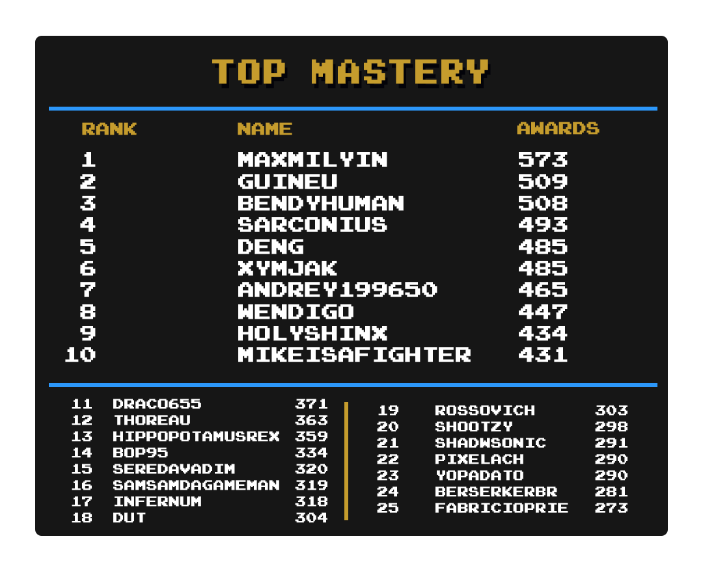
-
MaxMilyin has continues to reign supreme with now 573 total mastery awards.
-
guineu and Bendyhuman are in a tight race to claim that 2nd place spot.
-
 Infernum has jumped up 6 spots with a whopping 47 master awards this month.
Infernum has jumped up 6 spots with a whopping 47 master awards this month. -
 ShadwSonic has jumped into the top 25 with 30 new mastery awards and is sitting at 21st place.
ShadwSonic has jumped into the top 25 with 30 new mastery awards and is sitting at 21st place.
Notable Milestones
- Congratulations to guineu and Bendyhuman for reaching over 500 mastery awards.
- Congratulations to Infernum and DUT for reaching over 300 mastery awards.
- Congratulations to
 ChronoGear for reaching over 200 mastery awards.
ChronoGear for reaching over 200 mastery awards.
Arcade
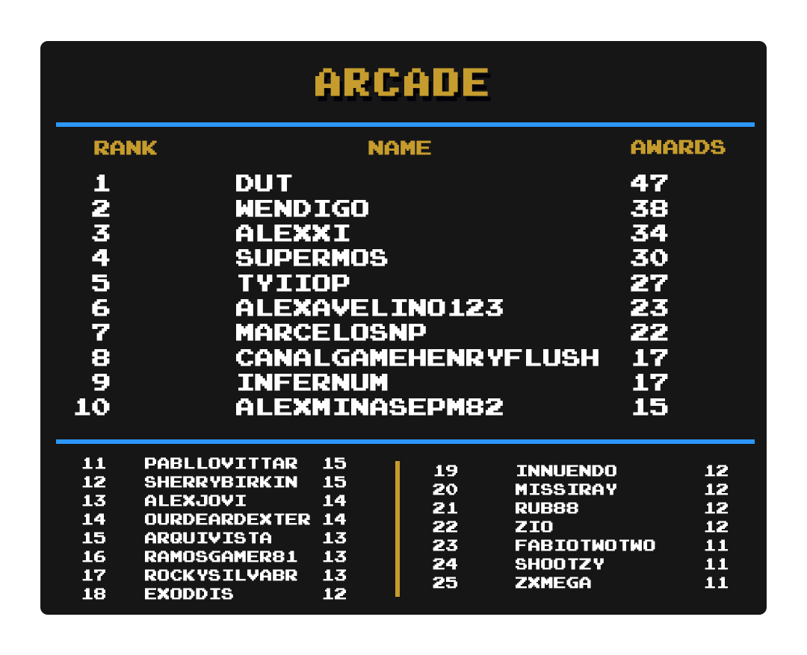
-
DUT is still holding strong to the first place crown, but other users are slowing catching up.
-
 supermos has jumped up 16 spots into 4th place with 18 new mastery awards this month.
supermos has jumped up 16 spots into 4th place with 18 new mastery awards this month. -
Infernum has jumped up 8 spots into 9th place with 5 new mastery awards this month.
-
 fabiotwotwo has made it into the top 25 and is sitting at 23rd place.
fabiotwotwo has made it into the top 25 and is sitting at 23rd place.
Atari 2600
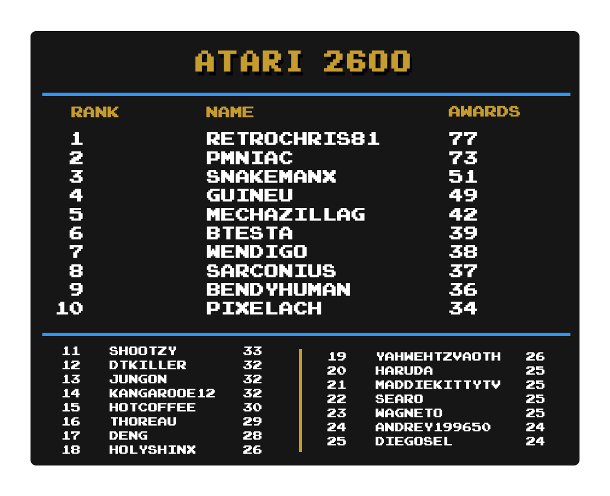
-
RetroChris81 is continuing their lead in this category, however
 PMniac is only a few awards behind.
PMniac is only a few awards behind. -
 MaddieKittyTV and
MaddieKittyTV and  Andrey199650 have both joined the top 25 and are sitting at 21st and 24th place.
Andrey199650 have both joined the top 25 and are sitting at 21st and 24th place.
Game Boy
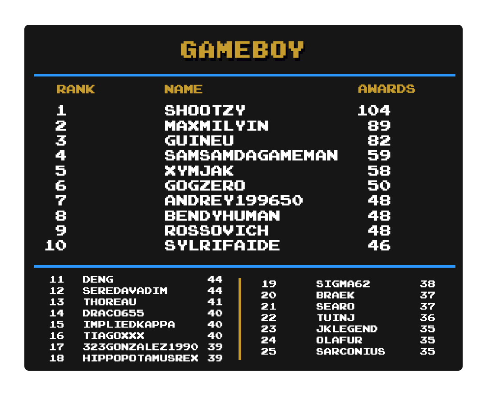
-
Shootzy, MaxMilyin, and guineu are all going strong in this category with 104, 89, and 82 mastery awards. The rest of the competition are far behind with less than 60.
Game Boy Advance
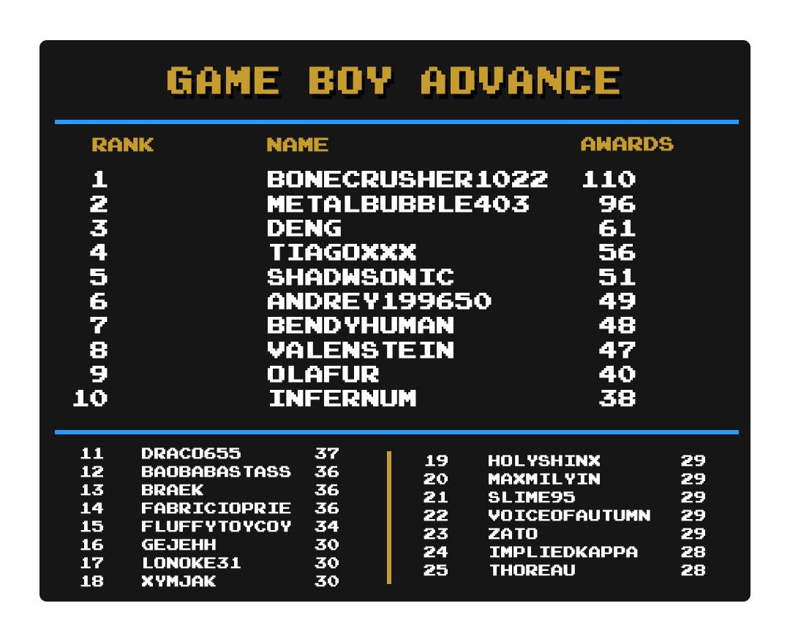
-
bonecrusher1022 extends the lead over
 metalbubble403 by 1 this month, with a total of 110 mastery awards.
metalbubble403 by 1 this month, with a total of 110 mastery awards. -
 voiceofautumn has made it into the picture and is sitting at 22nd with 29 mastery awards.
voiceofautumn has made it into the picture and is sitting at 22nd with 29 mastery awards.
Game Boy Color
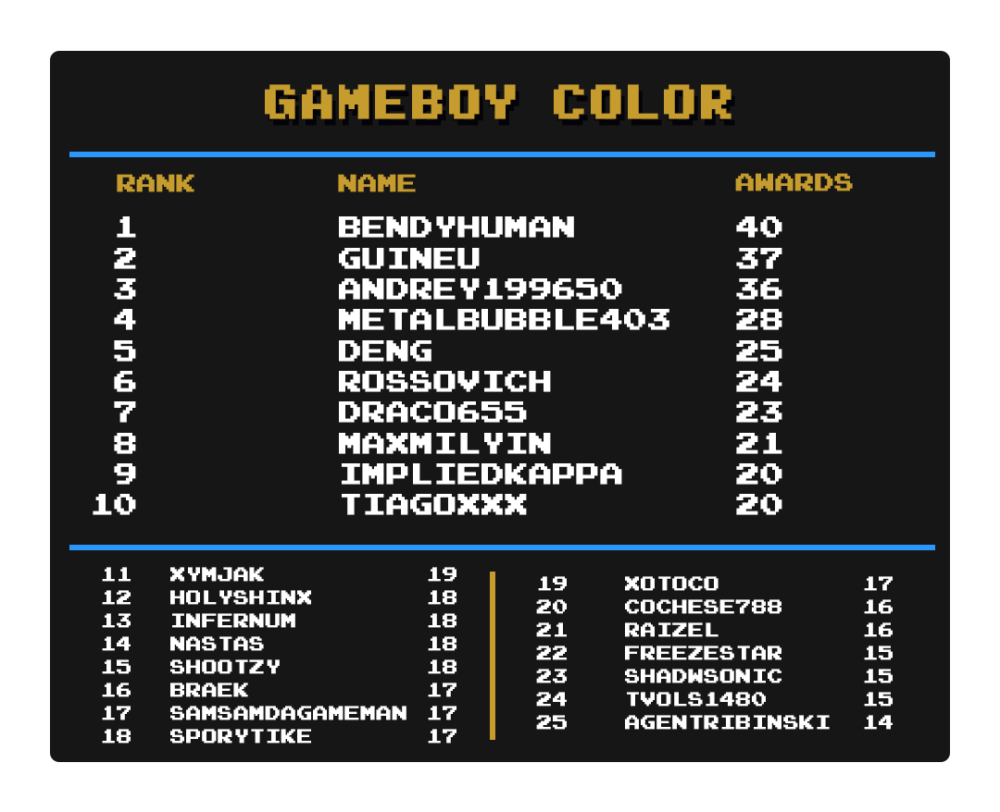
-
Bendyhuman is still sitting at first place even with no new mastery awards this month.
-
guineu is narrowing the gap and is only 3 awards behind 1st place.
-
 Xotoco and ShadwSonic have made their way into the top 25 and are sitting at 19th and 23rd place.
Xotoco and ShadwSonic have made their way into the top 25 and are sitting at 19th and 23rd place.
Game Gear
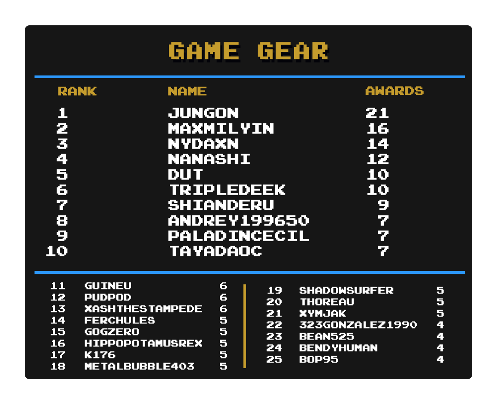
-
Jungon has taken the 1st place position from MaxMilyin with 9 mastery awards this month.
-
Nydaxn shot up from out of nowhere into 3rd place with 11 new mastery awards this month.
Hack Champ
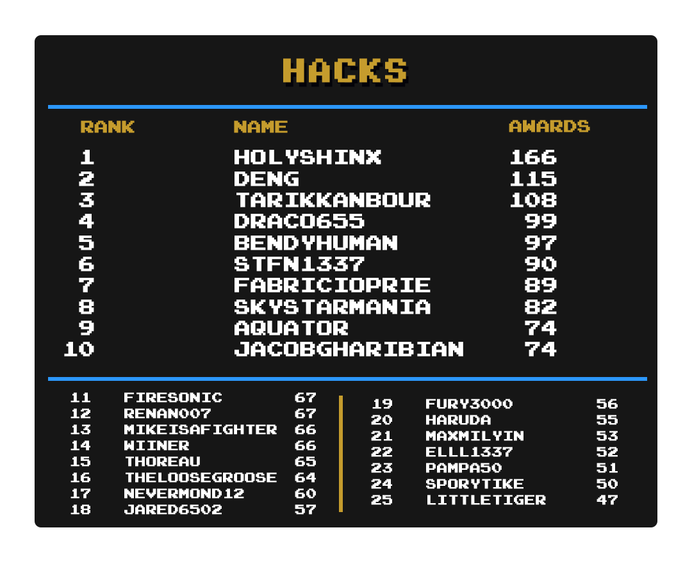
-
HolyShinx is in 1st place by a wide margin of 51 mastery awards over the 2nd place Blazekickn.
-
 Draco655 is 1 mastery award shy of hitting the 100 mark.
Draco655 is 1 mastery award shy of hitting the 100 mark.
Homebrew Champ
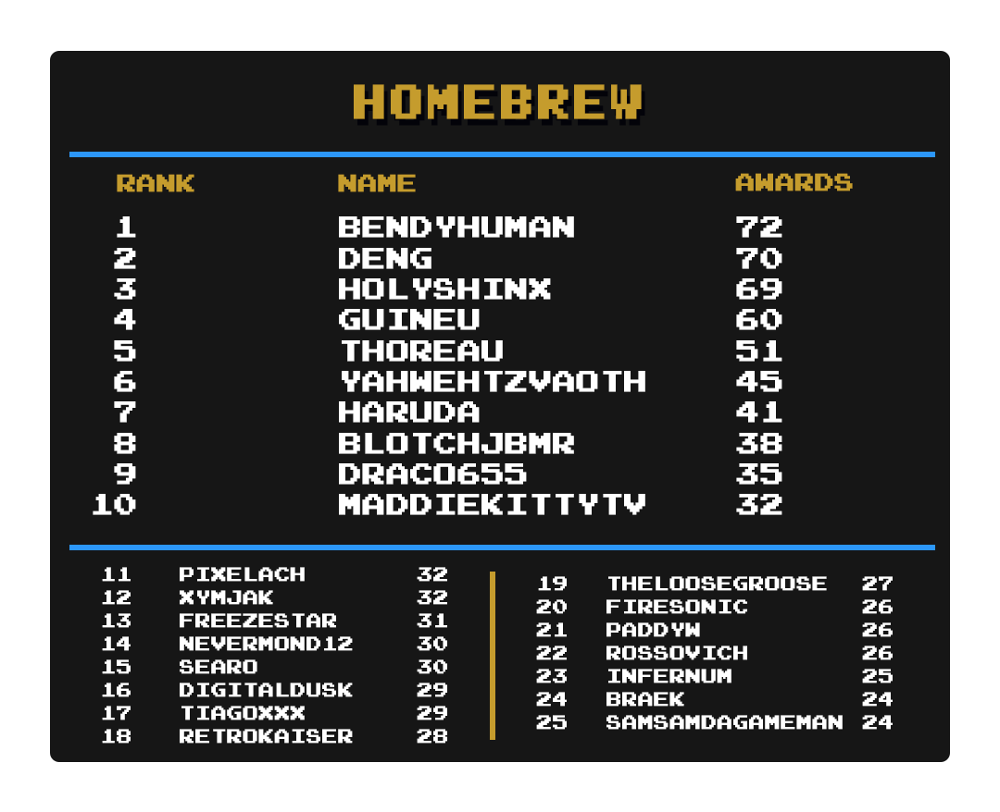
- Only 3 mastery awards separate our top the users. Do Blazekickn or HolyShinx have what it takes to overthrow Bendyhuman?
-
 SamsamDaGameMan has squeaked into the top 25 and is sitting at 25th place.
SamsamDaGameMan has squeaked into the top 25 and is sitting at 25th place.
Master System
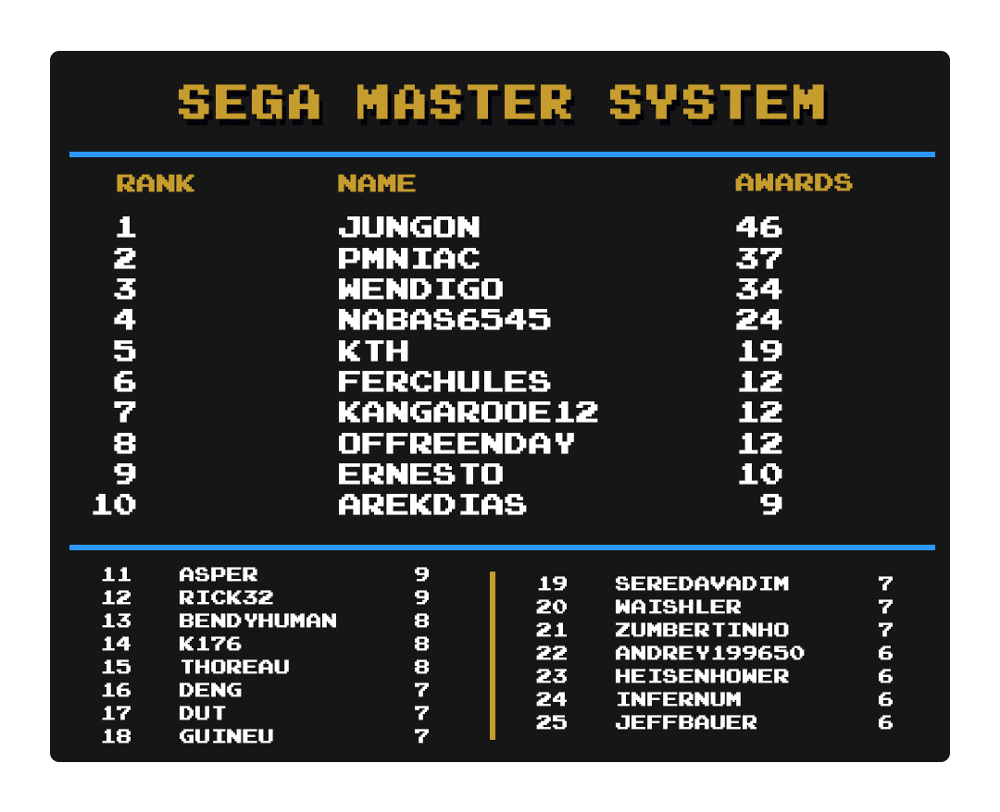
-
Jungon is extending their lead in 1st place with 5 new mastery awards.
-
DUT,
 Waishler, and Infernum have joined the top 25 and sit at 17th, 20th, and 24th place.
Waishler, and Infernum have joined the top 25 and sit at 17th, 20th, and 24th place.
Mega Drive
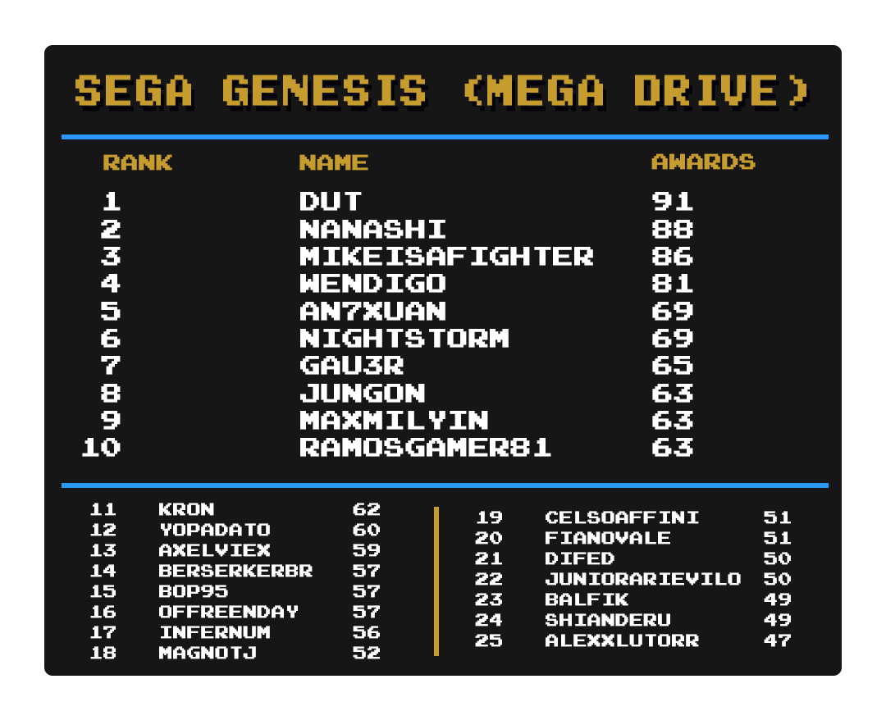
-
DUT has jumped from 3rd to 1st place with 7 new master awards this month. Knocking both
 Nanashi and
Nanashi and  mikeisafighter down a rank.
mikeisafighter down a rank. -
 Shianderu has made it into the top 25 and is sitting at 24th place.
Shianderu has made it into the top 25 and is sitting at 24th place.
N64
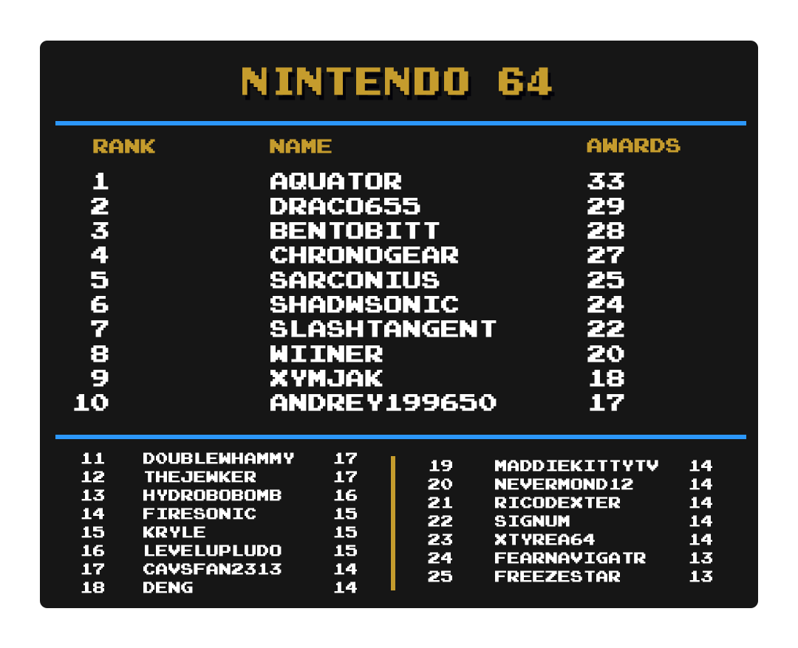
-
Aquator is slightly increasing the lead over and Draco655 and
 BenTobitt with 1 new mastery award this month.
BenTobitt with 1 new mastery award this month. -
 Fearnavigatr has made it into the top 25 and is sitting at 24th place.
Fearnavigatr has made it into the top 25 and is sitting at 24th place.
NES
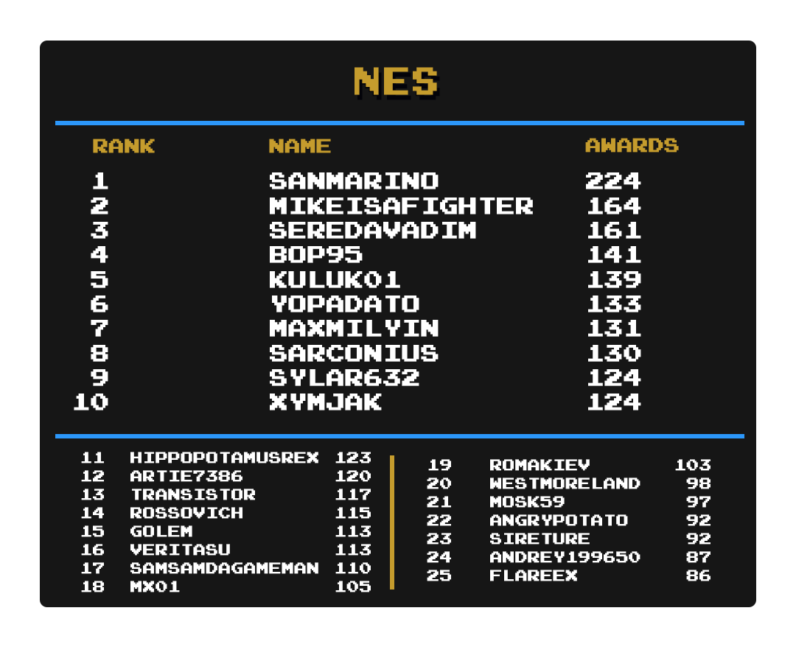
- The top 20 spots have gone unchanged with very little change in award numbers.
-
 mx01 and
mx01 and  RomaKiev have both broke the 100 mastery award mark.
RomaKiev have both broke the 100 mastery award mark. -
 FlareEX has made it into the top 25 and sits at 25th place.
FlareEX has made it into the top 25 and sits at 25th place.
Nintendo DS
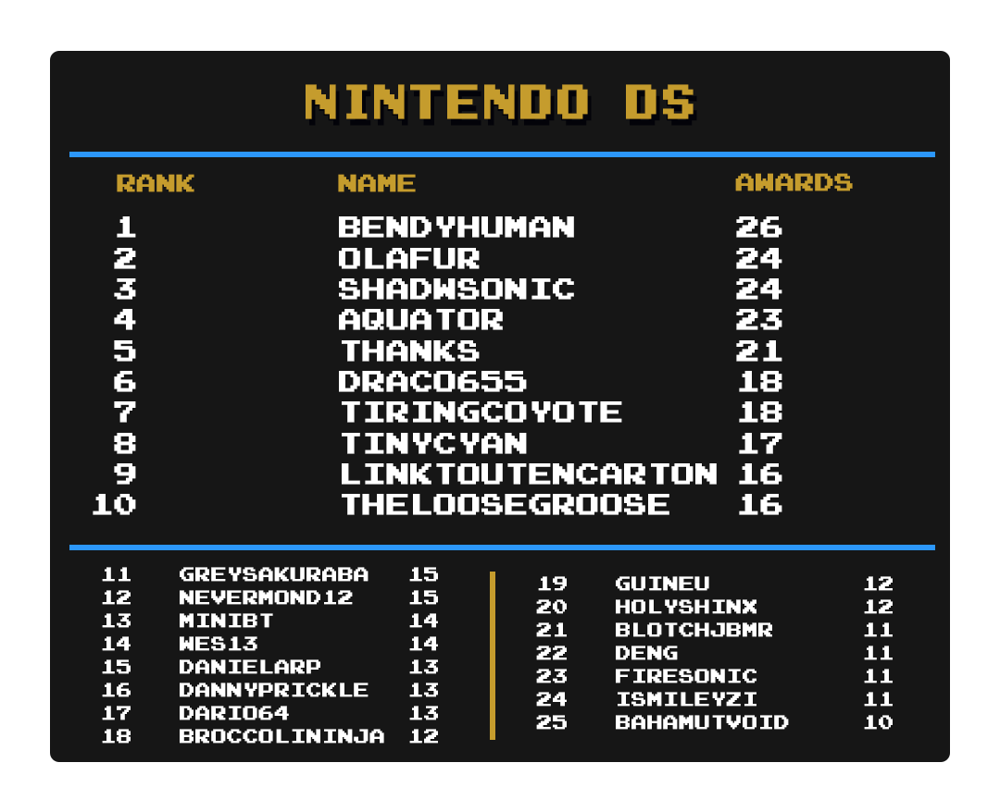
- What a tight race this category is. 5 awards separate 5th from 1st place, all of which have got either 2 or 3 new mastery awards this month. Bendyhuman is still holding onto 1st place, but the competition is hoping to change that.
-
Blazekickn and
 BahamutVoid have made their way into the top 25 are are sitting at 22nd and 25th place.
BahamutVoid have made their way into the top 25 are are sitting at 22nd and 25th place.
PlayStation
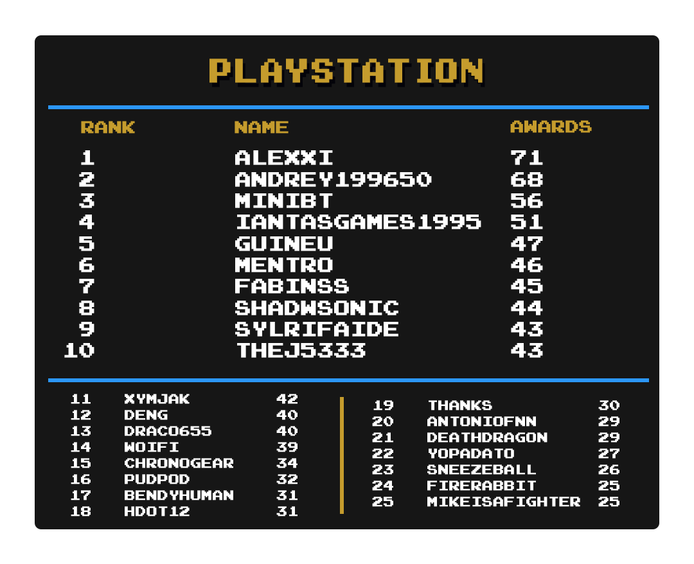
-
Alexxi and Andrey199650 and keeping the race for 1st close with 9 new mastery awards each.
-
 yopadato has joined the top 25 and is sitting at 22nd place.
yopadato has joined the top 25 and is sitting at 22nd place.
PC Engine
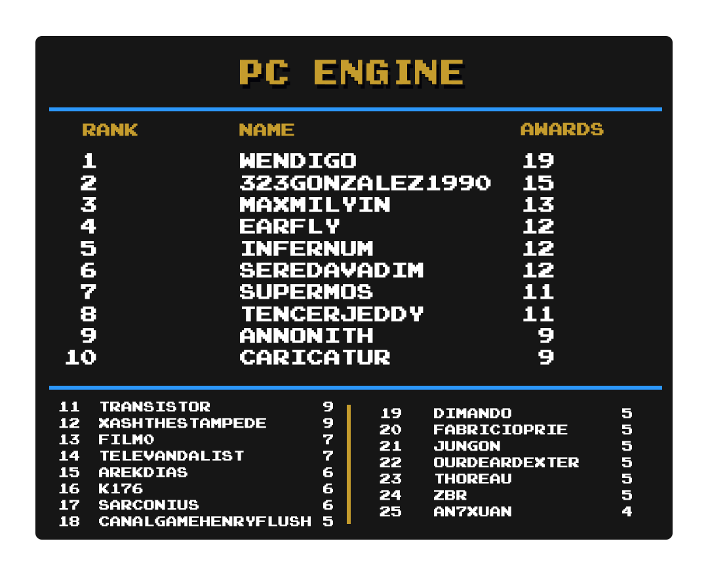
-
Wendigo is extending the lead on the 1st place spot with 2 new mastery awards this month.
-
Infernum has jumped up 20 places into the 5th spot with 8 new mastery awards this month.
-
supermos, out of nowhere, has shot into 7th place with 11 new mastery awards this month.
Pokemon Mini
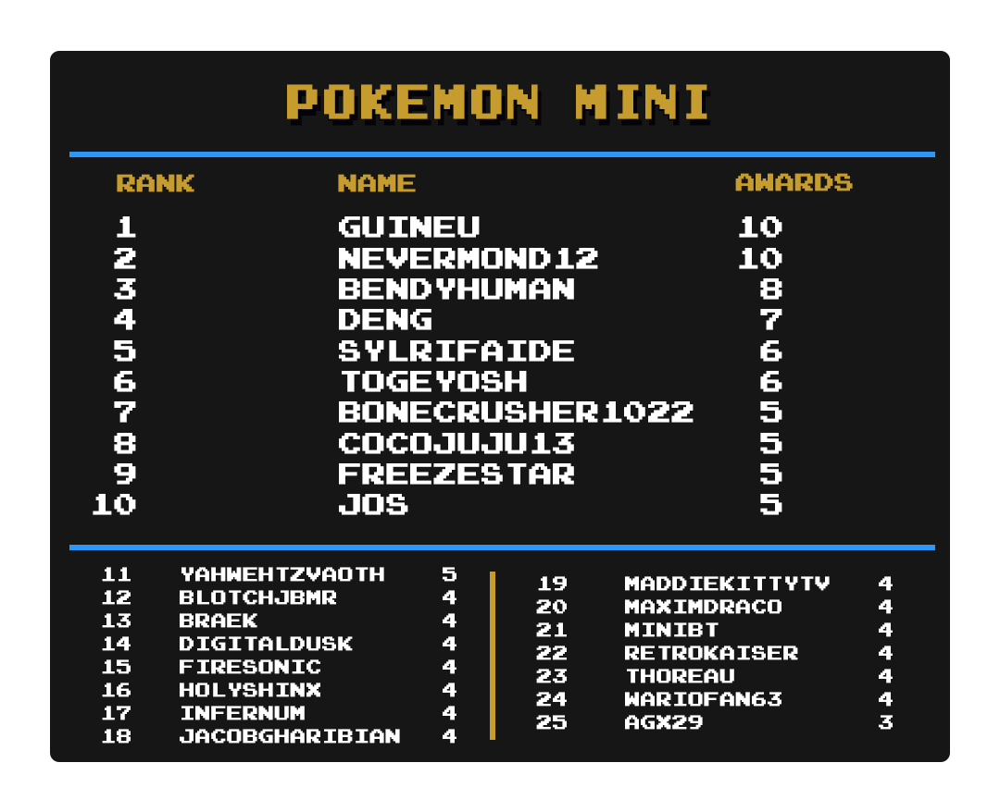
-
guineu & Nevermond12 are standing strong in the lead with 10 mastery awards each.
-
 YahwehTzVaoth and
YahwehTzVaoth and  BlotchJBMR have both picked up 1 mastery award and jumped up multiple spots on the leaderboards.
BlotchJBMR have both picked up 1 mastery award and jumped up multiple spots on the leaderboards.
Saturn
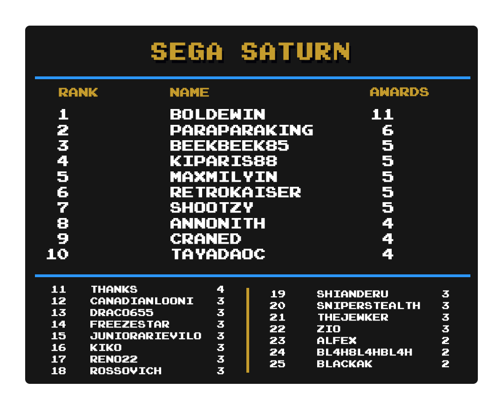
-
Boldewin still remains king with 11 mastery awards.
-
 Retrokaiser has launched his way into the top 25 and now sits at 6th place with 5 new mastery awards this month.
Retrokaiser has launched his way into the top 25 and now sits at 6th place with 5 new mastery awards this month. -
 freezestar has jumped into the top 25 as well and sits at 14th place.
freezestar has jumped into the top 25 as well and sits at 14th place.
SNES
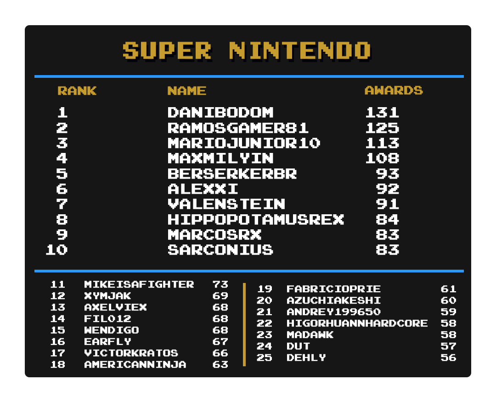
- Not much activity on this leaderboard, danibodom is still holding onto that number 1 spot.
-
 Dehly has made it into the top 25 and sits at 25th place.
Dehly has made it into the top 25 and sits at 25th place.
Watara Supervision
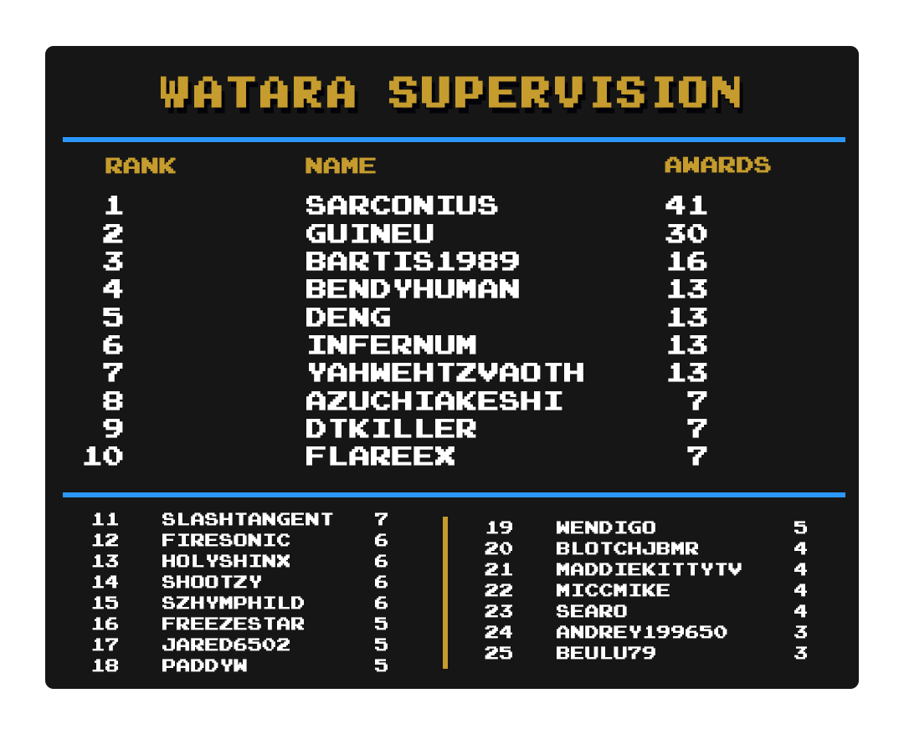
-
Sarconius still has a healthy lead at the 1st place spot.
-
 Szhymphild,
Szhymphild,  jared6502,
jared6502,  miccmike, and
miccmike, and  Beulu79 have all made it into the top 25 and are sitting at 15th, 17th, 22nd, and 25th.
Beulu79 have all made it into the top 25 and are sitting at 15th, 17th, 22nd, and 25th.